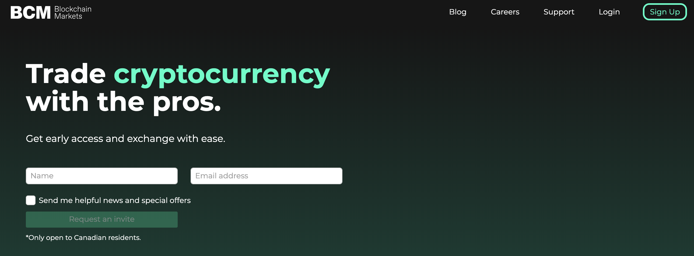
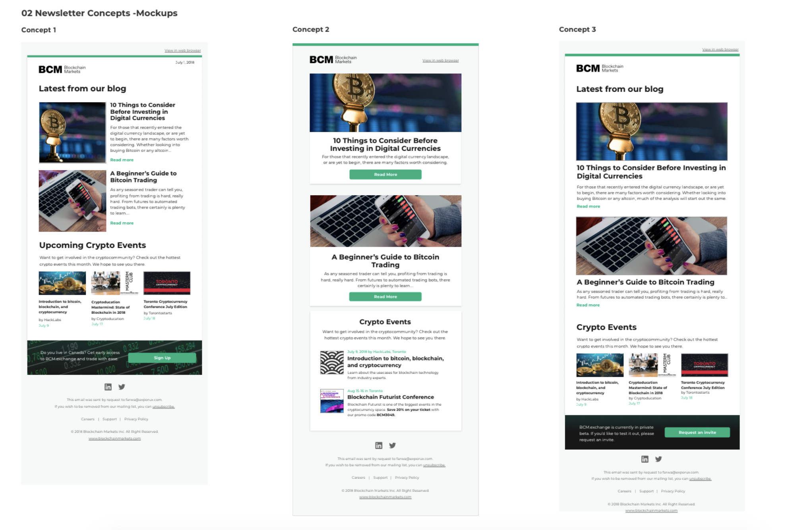

Mathurah Ravigulan 💻
As a product designer at Blockchain Markets, I created design concepts scaled for mobile on Sketch
I was hired by one of the advisors for my startup, who started a new role as director of product at Blockchain Markets, one of the clients for her product design consultancy, Explorux.
The design team consisted of four people including myself! Working on a small team allowed me to take more ownership on projects and propose new ideas.
- I conducted user interviews, compiled research documents + competitive analysis on similar financial instituions
- Designed mobile mockups for long-term exchange concepts using Sketch and Adobe Illustrator
- Created CSS Animations
- Designed and coded monthly newsletters for launch, can be viewed here
Company is now acquired by Bit.by!
👥 The Users
Blockchain Markets is a Canadian startup that is a cryptocurrency exchange platform for professional traders. Working on this platform exposed me more to the industry, where we frequently held user interviews with people who've been investing for years. Working with a more professional audience, compared to other platforms such as Coinsquare that cater to beginner audeinces, we had to ensure our platform provided our users with advanced trading features and metrics.
🕓 The time I joined
May - July 2017I joined at a really interesting time of the company, where they haven't even launched their MVP yet. A lot of research was required to be done. I worked here part-time while I had high school during the year and worked full-time few weeks in the summer. They were working on releasing their beta to early-access users.
Shortly after my internship ended, the company actually got acquired which was awesome! It was great to see my work make an impact.
🔍 Research
I did competitive analysis reviews on similar financial products such as TD's banking apps, other cryptocurrency exchanges such as Coinbase, and testing different two-factor authentication flows like Tangerine's onboarding. I took screenshots of every screen and created a master document on Sketch, mapping out the different interactions I had with each application. I added comments on what parts of the flow could be improved, my user frustrations, and what features they had that were intuitive.
I also helped conduct user interviews. I learned that since we were at such an early stage, we had to be very strategic on what type of people they chose to test their product on. We needed to create a user segmentation, as in the cryptocurrency industry, there's a broad range from professional experts, novice, and dabblers who simply hop on the bandwagon of the technology.
I took notes and recordings during the interview sessions to see how the user interacted with the website, seconds on each page, and seeing where the new painpoints were. We presented different designs to our test subjects to see which one they'd prefer more. After the user interivews, we syntheszied all the data and mapped out changes that needed to be made on the product roadmap.
💌 Newsletter Designs
Wireframes
I made three concepts for the newsletter templates on Sketch. I tested out the different versions with users to see what would be the most effective and translate into more clicks to our website.
📱 Mobile designs
My main project was working on scaling their desktop application for mobile. I created several different concepts, starting off by sketching the wireframes on paper, and thinking about the different types of mobile applications I interacted with during the research stage.
After working on several different concepts, we finally narrowed it down to two versions: an app that had an infinite scroll to see the different views, and a version that had a navigation bar on the bottom. I also created a light and dark mode version of the concept.
Concept A


Concept B